This section covers Part 2, regression for time series. I fit regression with ARMA errors using arima() and gls(), and I minimise the sum of squared errors myself with optim() to check the result against arima(). I fit ARMAX, VAR and GARMA models in R, use harmonic terms and dummy variables for seasonality and interventions, and fit a Poisson model with a spline trend to counts. I also show why regression on autocorrelated series can mislead, using two random walks, and I finish with forecasts from a regression with AR(1) errors.
The key concepts in this section are as follows,
Ordinary regression assumes independent errors. In time series the errors are usually autocorrelated, so the standard errors and p-values from lm() are wrong (usually too small), even if the coefficients are fine.
Regression with ARMA errors:\(y_t = \beta_0 + \beta_1 x_t + \eta_t\), where \(\eta_t\) follows an ARMA model. Fit with arima(y, order, xreg = x), with gls(), or by minimising the SSE yourself.
ARMAX is different: lagged \(y\) goes in as a predictor (\(y_t = \beta x_t + \phi y_{t-1} + \varepsilon_t\)), which changes what \(\beta\) means.
Harmonic regression: model seasonality with sine and cosine terms \[ \sin(2\pi k t / m), \quad \cos(2\pi k t / m), \quad k = 1, 2, \dots \] Fewer parameters than one dummy per month, and it works with long periods (e.g. 365.25).
Indicator (dummy) variables: for seasons (one per month minus one), or for interventions such as a new law or a lockdown.
Non-normal response: for counts use a GLM, e.g. Poisson with a log link. Check for overdispersion (residual deviance much bigger than its df → quasipoisson or negative binomial).
Splines: a flexible smooth trend instead of a straight line, e.g. ns(t, df = 4).
VAR(p): several series that all depend on each other’s past values. For two series, \(y_t = \alpha_1 + b_{11} y_{t-1} + b_{12} z_{t-1} + e_t\) and \(z_t = \alpha_2 + b_{21} y_{t-1} + b_{22} z_{t-1} + w_t\). Each equation can be fitted by least squares. Impulse response functions show how a shock in one series moves the others over time.
GARMA: regression with ARMA-type terms for non-normal responses (e.g. counts). The ARMA terms go inside the linear predictor: \(g(\mu_t) = x_t'\beta + \sum \phi_k (g(y_{t-k}) - x_{t-k}'\beta) + \sum \theta_k (g(y_{t-k}) - \eta_{t-k})\). Fitted by maximum likelihood.
Spurious regression: regressing one random walk on another, unrelated one often gives a “highly significant” slope. Difference first, or model the errors.
Always check the residual ACF at the end.
6.2 Worked examples
This section starts with harmonic regression on the Nottingham temperatures and compares it with month dummies using AIC. It then fits regression with AR(1) errors to the beaver data, both with arima() and by minimising the SSE by hand, and compares the standard errors with OLS. Next, a Poisson model with a law dummy, a spline trend and harmonic terms is fitted to the Seatbelts data and corrected for overdispersion. The section then contrasts ARMAX with regression on AR(1) errors, forecasts with a regressor, shows spurious regression on random walks, fits a VAR(1) to simulated data, and ends with a GARMA model for polio counts, including a Poisson GARMA(1, 0) likelihood written from first principles.
6.2.1 Harmonic regression vs month dummies
Monthly average temperature at Nottingham, 1920 to 1939.
Code
y <- nottemt <-1:length(y)plot(y, main ="Nottingham monthly temperature")
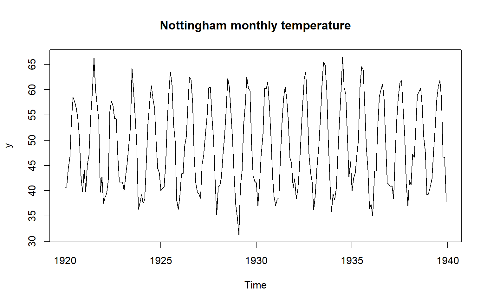
Code
# harmonic regression with 1 and 2 harmonicsm1 <-lm(y ~sin(2*pi*t/12) +cos(2*pi*t/12))m2 <-lm(y ~sin(2*pi*t/12) +cos(2*pi*t/12) +sin(2*pi*2*t/12) +cos(2*pi*2*t/12))# one dummy per monthmonth <-factor(cycle(y))m3 <-lm(y ~ month)c(harm1 =AIC(m1), harm2 =AIC(m2), dummies =AIC(m3))
Two harmonics have a lower AIC than 12 month dummies, using 5 parameters instead of 12.
Code
plot(t[1:60], y[1:60], type ="l", xlab ="month", ylab ="temp", main ="First 5 years")lines(t[1:60], fitted(m2)[1:60], col ="red")
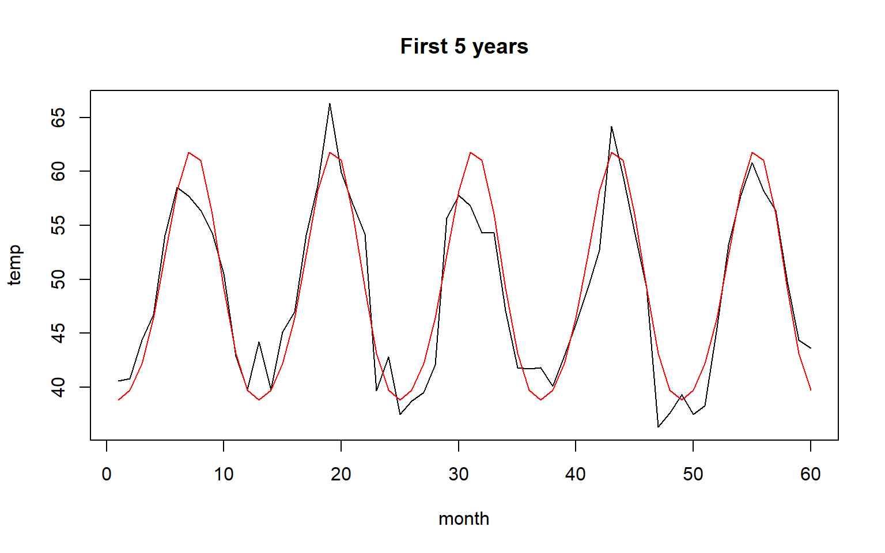
Code
acf(resid(m2), main ="Residuals of harmonic regression")
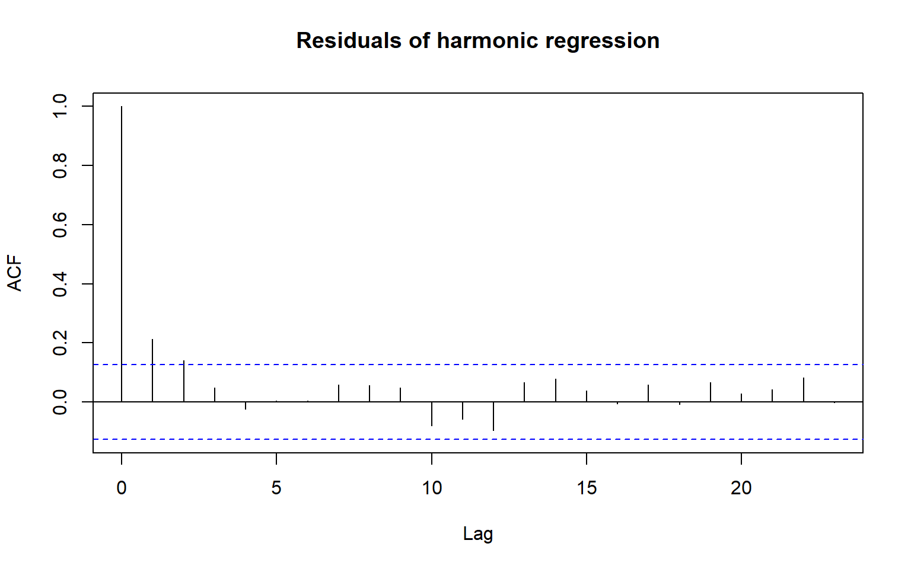
The residuals are still autocorrelated (a warm month tends to be followed by a warm month), so the lm() standard errors are too small. The next section fixes this.
6.2.2 Regression with AR(1) errors
beaver2 (built into R): body temperature of a beaver every 10 minutes, and whether it was active (1) or not (0).
Code
b <- beaver2plot(b$temp, type ="l", main ="Beaver body temperature", ylab ="temp")points(b$temp, col = b$activ +1, pch =16, cex =0.5)
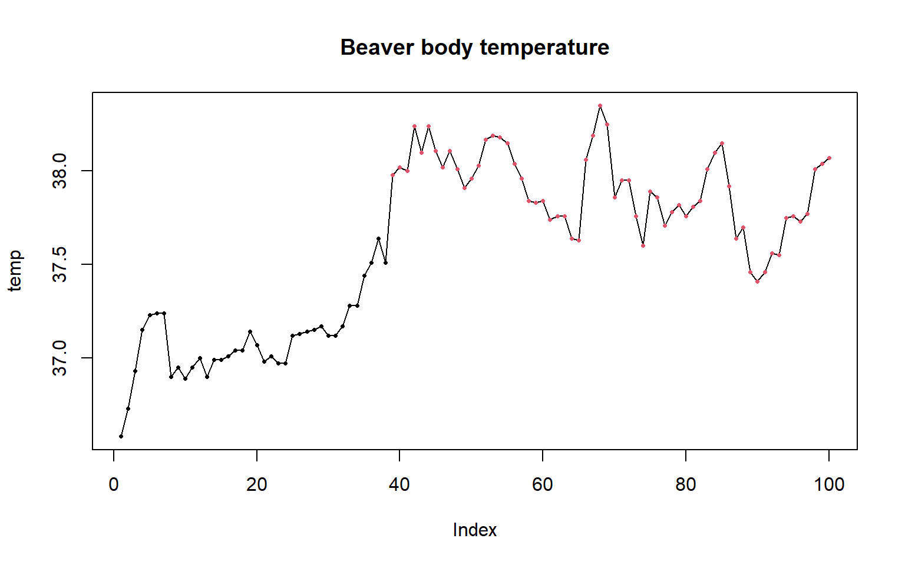
Code
ols <-lm(temp ~ activ, data = b)summary(ols)$coefficients
Estimate Std. Error t value Pr(>|t|)
(Intercept) 37.0968421 0.03456240 1073.32955 2.895092e-201
activ 0.8062224 0.04389429 18.36736 1.682051e-33
Code
acf(resid(ols))
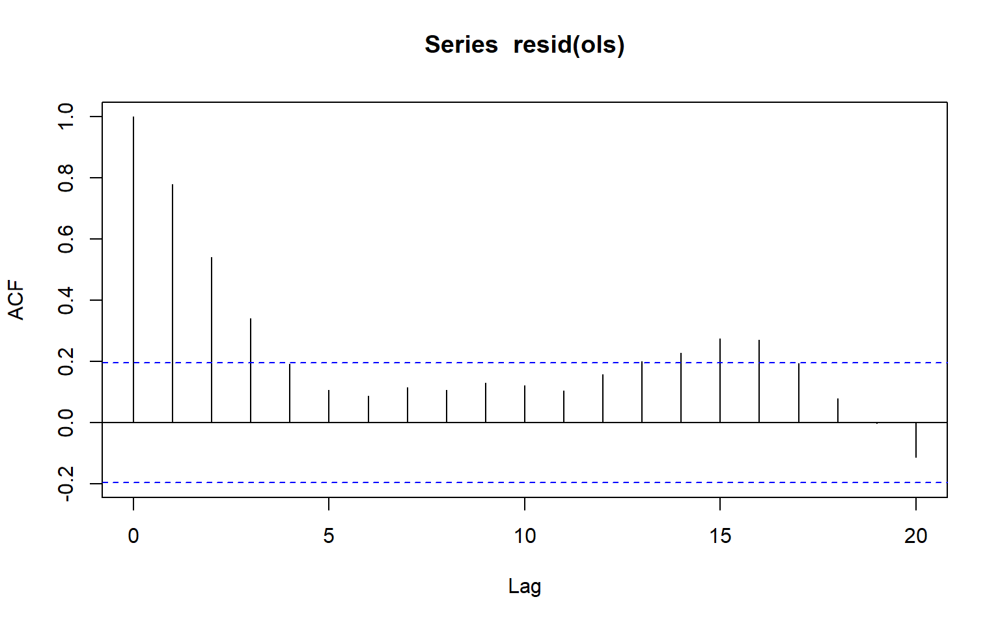
Code
pacf(resid(ols))
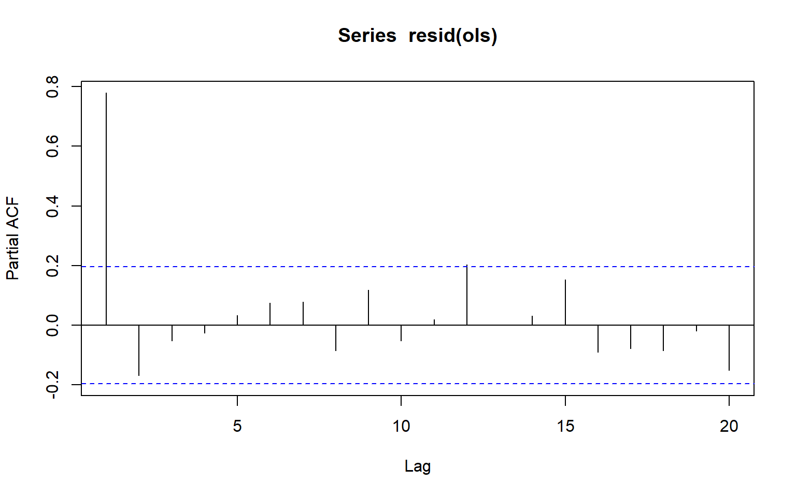
The PACF cuts off after lag 1, so try AR(1) errors:
Substitute \(\eta_t = y_t - \beta_0 - \beta_1 x_t\) into the AR(1) equation, so \(\varepsilon_t = \eta_t - \phi\,\eta_{t-1}\), and minimise \(\sum \varepsilon_t^2\).
Code
sse_ar1 <-function(par, y, x) { b0 <- par[1] b1 <- par[2] phi <- par[3] eta <- y - b0 - b1 * x n <-length(y) e <- eta[2:n] - phi * eta[1:(n-1)]sum(e^2)}start <-c(coef(ols), 0.5)fit_own <-optim(start, sse_ar1, y = b$temp, x = b$activ, control =list(maxit =2000))round(fit_own$par, 4)
(Intercept) activ
37.2844 0.5842 0.8255
Code
round(coef(fit_ar), 4)
ar1 intercept b$activ
0.8733 37.1920 0.6139
Close to arima(), but not identical: arima() uses full maximum likelihood, while this conditional SSE drops the first observation. Both say the same thing. Compare the standard error of the activity effect:
6.2.4 Counts: Poisson regression with an intervention, season and a spline trend
Seatbelts: monthly UK drivers killed, 1969 to 1984. Wearing seatbelts became compulsory in February 1983 (law = 1).
Code
library(splines)sb <-as.data.frame(Seatbelts)sb$t <-1:nrow(sb)plot(sb$DriversKilled, type ="l", main ="UK drivers killed per month", ylab ="deaths")abline(v =which(sb$law ==1)[1], col ="red", lty =2)
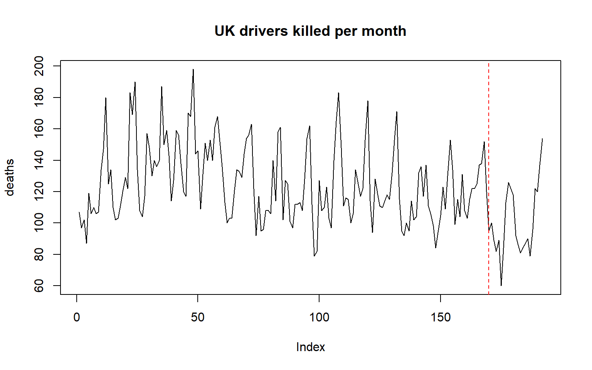
Code
g1 <-glm(DriversKilled ~ law +ns(t, df =4) +sin(2*pi*t/12) +cos(2*pi*t/12),family = poisson, data = sb)summary(g1)$coefficients[1:2, ]
Estimate Std. Error z value Pr(>|z|)
(Intercept) 4.7436431 0.02616464 181.299792 0.00000000
law -0.1960615 0.05162604 -3.797725 0.00014603
Code
# overdispersion check: should be close to 1g1$deviance / g1$df.residual
[1] 2.486219
The ratio is above 1, so the data are overdispersed. Use quasipoisson, which keeps the same estimates but makes the standard errors bigger:
Code
g2 <-glm(DriversKilled ~ law +ns(t, df =4) +sin(2*pi*t/12) +cos(2*pi*t/12),family = quasipoisson, data = sb)summary(g2)$coefficients["law", ]
Estimate Std. Error t value Pr(>|t|)
-0.19606154 0.08168346 -2.40026000 0.01738051
Code
# effect of the law as a percentage change100* (exp(coef(g2)["law"]) -1)
law
-17.80383
Code
plot(sb$DriversKilled, type ="l", col ="grey", ylab ="deaths", main ="Fitted values")lines(fitted(g2), col ="red")
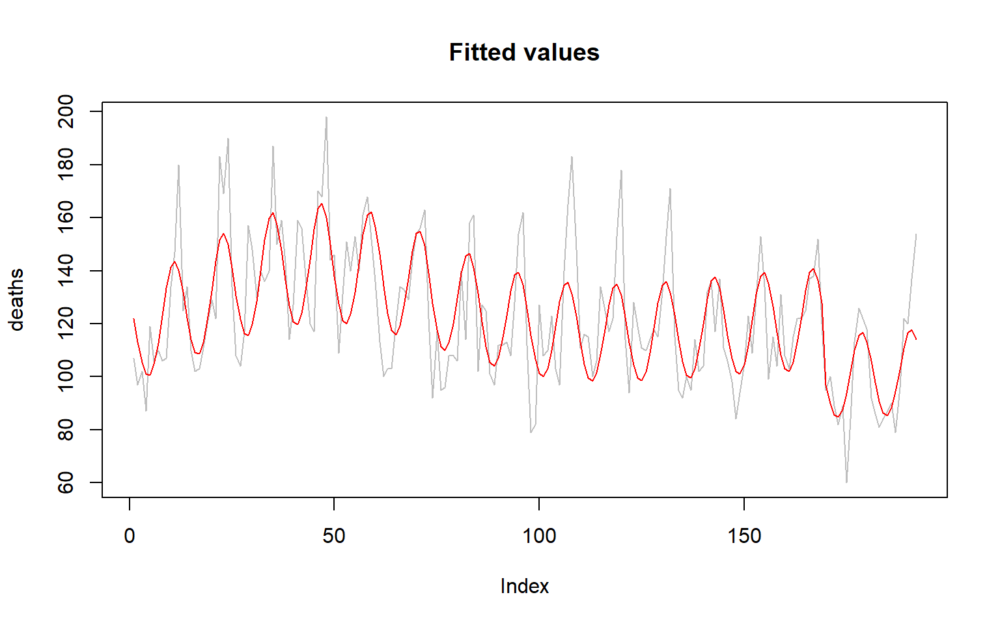
Code
acf(resid(g2, type ="pearson"))
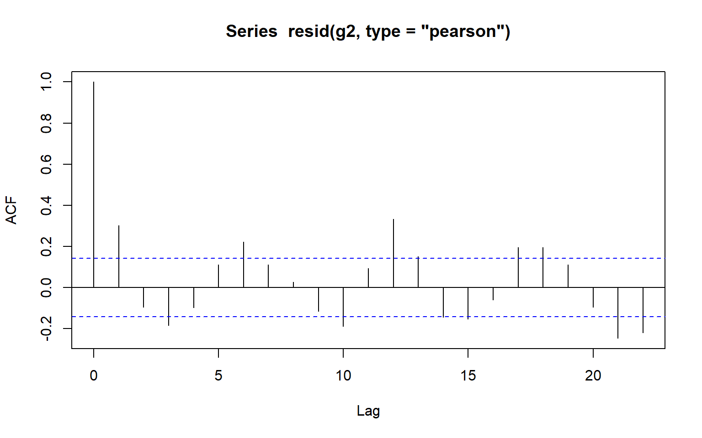
After the law, deaths are lower by roughly this percentage, holding trend and season fixed. Some residual autocorrelation is left, so the standard errors are still a bit optimistic. That’s worth saying in a reflection.
6.2.5 ARMAX: lagged y as a predictor
Back to the beaver data, but now with the previous temperature as a predictor:
# long run effect of activitycoef(armax)["activ"] / (1-coef(armax)["temp_lag"])
activ
0.736709
The activity coefficient is much smaller here than in the AR-errors model. That’s because in ARMAX it’s only the immediate effect of activity, with yesterday’s temperature held fixed. The effect builds up over time, and the long run effect is \(\beta_1 / (1 - \phi)\), which is close to the AR-errors estimate. In regression with ARMA errors, \(\beta_1\) is the effect on the mean directly. That’s the main difference between the two models.
6.2.6 Forecasting with regressors
To forecast you need future values of the regressor. Here: assume the beaver stays active for the next hour (6 time steps).
Point Forecast Lo 80 Hi 80 Lo 95 Hi 95
101 38.03654 37.87622 38.19686 37.79135 38.28173
102 38.00732 37.79447 38.22017 37.68180 38.33285
103 37.98180 37.73633 38.22727 37.60639 38.35722
104 37.95952 37.69183 38.22721 37.55012 38.36892
105 37.94006 37.65659 38.22353 37.50653 38.37358
106 37.92306 37.62813 38.21800 37.47200 38.37412
Code
plot(fc, include =50, main ="Regression with AR(1) errors: 6 step forecast")
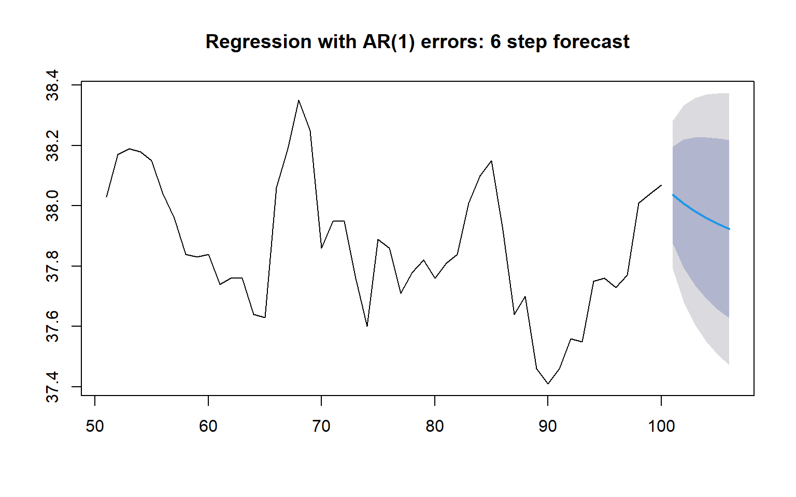
The forecast moves gradually from the last observation towards the mean for an active beaver, because of the AR(1) errors. The interval widens with the horizon. It doesn’t include uncertainty about the future activity values: those are treated as known.
6.2.7 Problems with regression on autocorrelated data: spurious regression
Estimate Std. Error t value Pr(>|t|)
(Intercept) 1.6740222 0.50019987 3.346707 9.785267e-04
x -0.3116982 0.02676273 -11.646729 3.235148e-24
Code
summary(lm(diff(y) ~diff(x)))$coefficients
Estimate Std. Error t value Pr(>|t|)
(Intercept) -0.05894418 0.07499728 -0.7859509 0.4328406
diff(x) 0.04571692 0.07917267 0.5774331 0.5643063
The first regression says x is highly significant, but x and y have nothing to do with each other. Both wander, and the residuals are hugely autocorrelated, so the standard errors are far too small. After differencing, the “relationship” disappears.
6.2.8 VAR models
Simulate two series from a VAR(1), using the same parameters as the notes.
Code
library(MASS)library(vars)set.seed(301)B <-matrix(c(0.7, 0.2, 0.2, 0.7), 2, 2)alpha <-c(-0.7, 1.3)Sigma <-matrix(c(1, 0.5, 0.5, 1), 2, 2)N <-200s <-matrix(0, N, 2)s[1, ] <-c(1, 5)for (t in2:N) { s[t, ] <- alpha + B %*% s[t-1, ] +mvrnorm(1, c(0, 0), Sigma)}colnames(s) <-c("y", "z")matplot(s, type ="l", lty =1, ylab ="", main ="Two series from a VAR(1)")
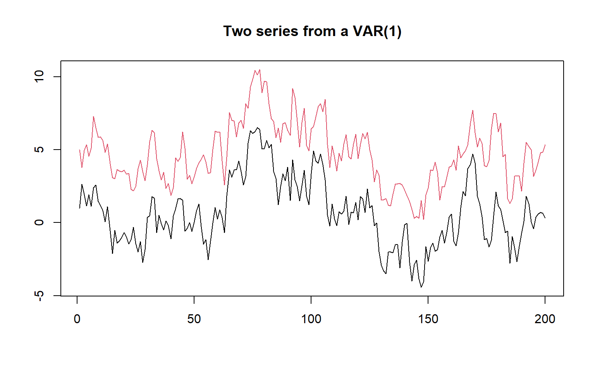
From first principles: each equation is just a regression on the lagged values of both series.
A one unit shock in y pushes z up, and the effect takes about 20 steps to die out because of the autoregressive terms.
6.2.9 GARMA: counts with autocorrelation
Monthly polio cases in the US, 1970 to 1983. These are counts, so a normal model doesn’t fit, and the counts are autocorrelated, so a plain GLM doesn’t either.
Code
library(gamlss.data)data(polio, package ="gamlss.data")df <-data.frame(pol =as.numeric(polio), mnth =0:167)plot(df$pol, type ="h", xlab ="month", ylab ="cases", main ="Polio cases")
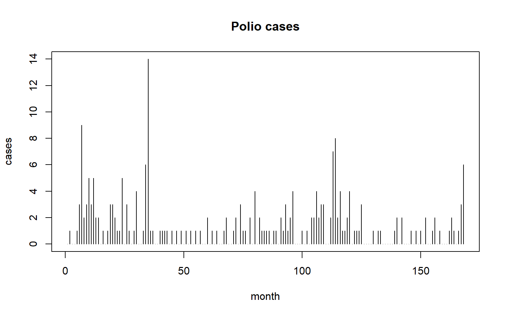
Figure 6.1: Monthly polio cases in the United States, 1970 to 1983.
6.2.10 From first principles: a Poisson GARMA(1, 0)
With a log link and one AR term, the linear predictor is
# compare AIC with the plain Poisson GLM, on the same 167 observationsm_glm2 <-glm(y[-1] ~ X[-1, ] -1, family = poisson)c(glm =AIC(m_glm2), garma =2* fit_g$value +2*6)
glm garma
565.2906 545.8281
\(\hat\phi\) is clearly positive and the AIC drops a lot, so last month’s count helps predict this month’s, beyond the seasonal pattern.
6.3 Reflection
I was really excited for this section, as I’ve always wondered how to account for time in linear regression models. I have a background in property management, and while there are many variables that determine the value of a property, a major one is time. The whole industry is built on the assumption that property values rise over time.
I explain further in my Time Series Regression Project 3 {Chapter 11}, but my main struggle with this was assuming that the only way time was added to for example a property valuation model, was through the ARMA error terms. It also doesn’t apply to valuing a single property based off sales of past other properties, but rather it would be based on regular valuations of the same property. It took some time, but I eventually figured out how time series regression can incorporate time in its variables, and the ARMA errors. This was similar to the issues I had with GARCH {Chapter 3}, where I had an expectation of this new approach would work, but initially failed to identify the unique circumstances in which GARCH would be applicable, specifically to financial returns for GARCH. For time series regression, it obviously has a focus on time series data, which while I am used to now from ARIMA models, I am not used to this kind of data in a Regression context, and it took me a while to realise that these varibles that had time contextual information where not a part of the ARMA errors. I thought that the ARMA errors were the new addition to regression models, which they are, but in doing so I assumed these new kinds of variables were a part of that new addition of time dependent errors.
Two harmonics gave a lower AIC than twelve month dummies (1091.866 against 1097.645) with five parameters instead of twelve. OLS standard errors were too small for the beaver data: 0.0439 under OLS against 0.1381 with AR(1) errors. For the seatbelt counts, the overdispersion ratio was 2.4862, so I used quasipoisson, and the law corresponds to a fall of about 17.8%. ARMAX’s long-run effect of 0.7367 is well above the AR-errors estimate of 0.6139, so the two models differ. The polio GARMA gives phi = 0.228, and AIC falls from 565.29 to 545.83.
Autocorrelated errors leave the coefficients from lm() usable, but its standard errors come out too narrow, so effects look firmer than they are. With ARMA errors the autocorrelation sits in the error term and the slope is the direct effect on the mean. In ARMAX the lagged response is a predictor, so the slope is only the immediate effect, and the long-run effect is that slope divided by one minus the lag coefficient. Harmonic terms, sine and cosine pairs at multiples of the seasonal frequency, describe a seasonal pattern with far fewer parameters than dummies, and the example picks the number of harmonics by AIC.
A Poisson coefficient sits on the log scale, and the example converts the seatbelt-law coefficient into a percentage change using the exponential, holding trend and season fixed. Overdispersion means the residual deviance is much bigger than its degrees of freedom, and I check it with that ratio, which should be close to one. For the seatbelt model the ratio is above one, so I used quasipoisson, which keeps the estimates but widens the standard errors.
A VAR models each series from past values of both series, and each equation is an ordinary least squares regression on lagged values. An impulse response shows how a one-unit shock to one series moves the other over later steps; in the simulation, z responds upward to a shock to y and the effect fades. A plain GLM does not fit the autocorrelated polio counts, so GARMA adds ARMA-type terms to the linear predictor and is fitted by maximum likelihood. Two independent random walks can look strongly related because both wander, which leaves autocorrelated residuals and standard errors far too small. For forecasting, a regression needs future values of the regressor, which the example assumes for the next stretch of steps, and the prediction interval does not include uncertainty about them.